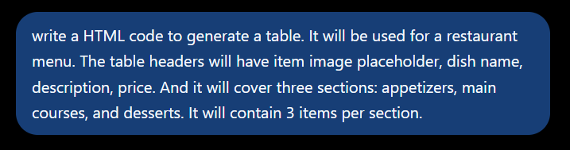
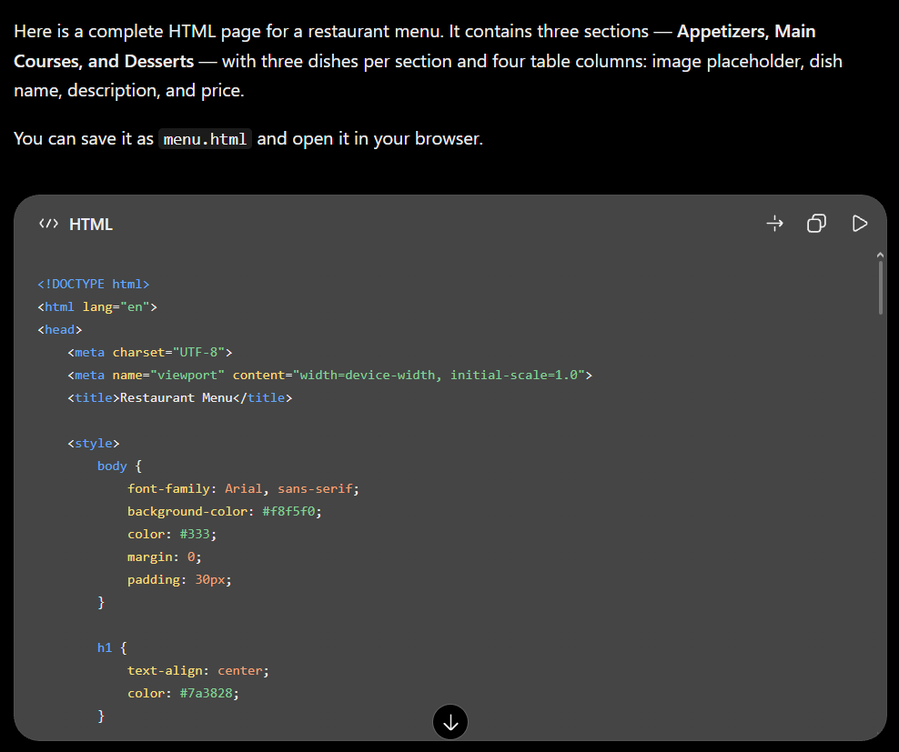
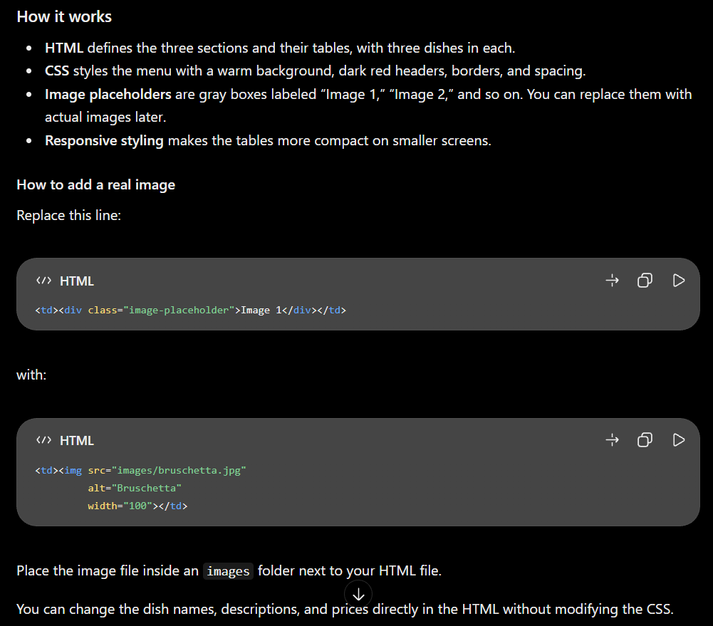
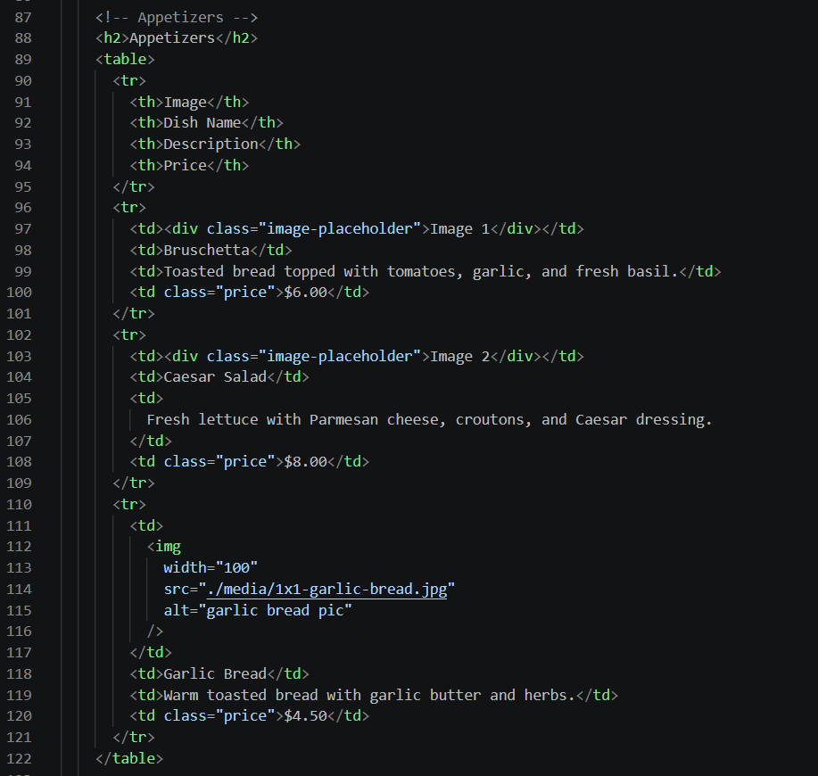

The AI generated code works perfectly fine, I did not encounter any problems running it and it even added styling to the page without the use of CSS. One minor issue I found is that the images added later inside the table will not fall under the class of placeholder images declared in the style section, so the images added keep their original size and will need to be have their width and height manually changed. I also noticed that the AI added unnecessary tags, such as <thead> </thead> and <body> </body> inside the table, making the code longer and more confusing with so many open tags, so I removed them for optimization.
Here's a snapshot of the Appetizers table section after changes as an example, the same was done with the other two tables:
